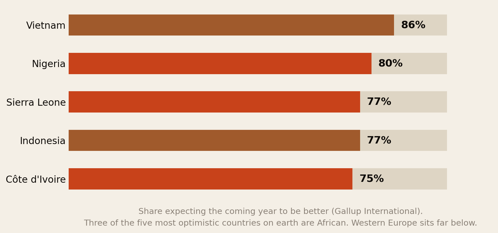
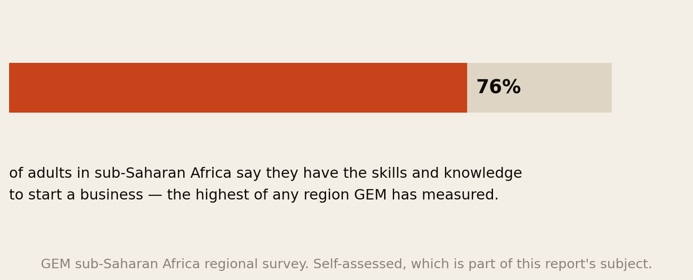
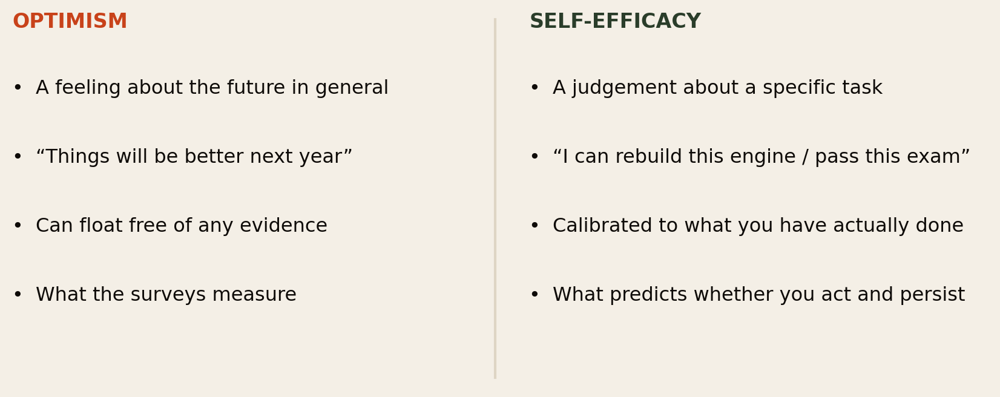
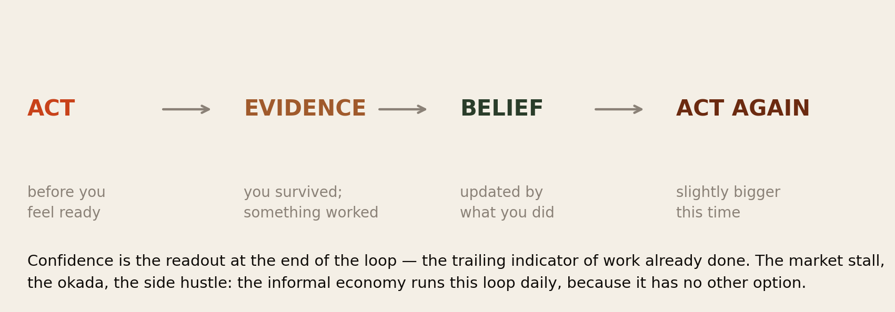
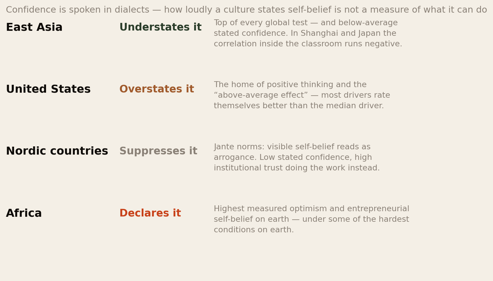
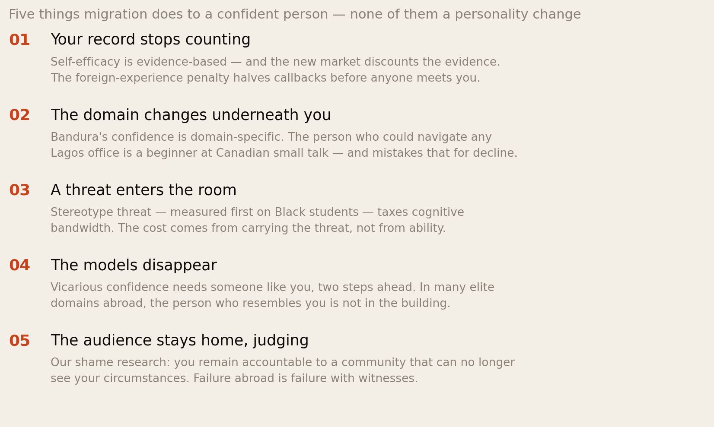
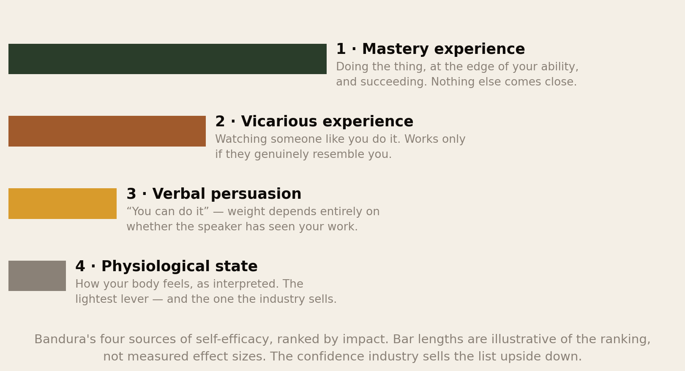
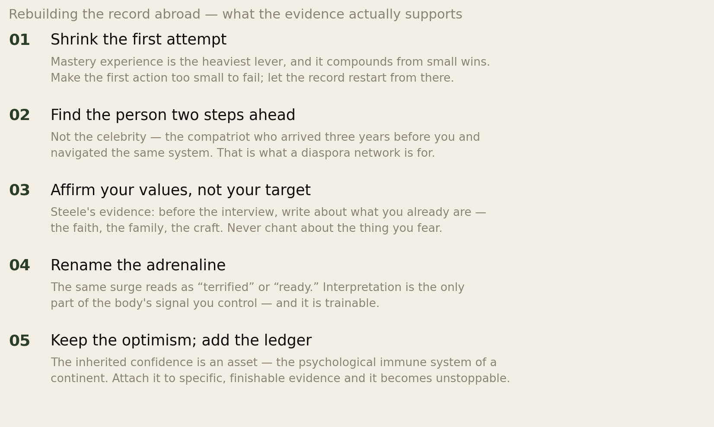

The Most Optimistic People on Earth.
By the numbers, Africans are the most confident people alive: three of the five most optimistic countries on earth, and the highest entrepreneurial self-belief of any region ever measured. This report asks what that confidence actually is, why the same person so often goes quiet abroad — and what half a century of psychology says about getting it back.
Section 01The Short Version
Everyone in this network has seen both halves of the puzzle. The uncle in Kumasi who has failed at four businesses and describes the fifth with total certainty. And the brilliant cousin in Toronto — top of her class at home — who now rewrites one email for forty minutes. Same family, same culture, opposite confidence. This report is about why.
- African confidence is real and measured. In Gallup International’s global survey, Nigeria (80%), Sierra Leone and Côte d’Ivoire sit among the five most optimistic countries on earth about the coming year, while Western Europe sits near the bottom. And in GEM’s regional data, 76% of sub-Saharan adults believe they have the skills to start a business — the highest of any region measured.
- The paradox is the direction. The world’s highest confidence sits in some of its hardest circumstances, and some of its lowest stated confidence sits in its most successful systems: East Asian students top every global test while reporting below-average self-belief — inside Shanghai and Japan the classroom correlation actually runs negative. Whatever confidence is, it is not a readout of conditions.
- Psychology splits it into two things, and the split explains Africa. Optimism is a feeling about the future in general. Self-efficacy — Bandura’s term — is an evidence-based judgement that you can do a specific thing. The African data is strongest on the first. The second is built one way only: by doing.
- And on the second measure, Africa has a hidden advantage. The informal economy is a machine for what Bandura called mastery experience — nobody at the market stall waits until they feel ready. The action-before-readiness loop that the modern confidence literature prescribes is the African street’s default setting.
- Migration dismantles it — structurally, not psychologically. Self-efficacy is domain-specific and evidence-based; migration changes the domain and voids the evidence. Add the measured penalties from our own research — the foreign-experience discount, the silent name-based rejections, stereotype threat — and the confident arrival’s quiet second year is not a personality change. It is a ledger change.
- What rebuilds it is boring and specific: small mastery wins at the edge of ability, models who genuinely resemble you, values-affirmation before high-stakes moments — and almost never the imported “believe in yourself” ritual, which the evidence has been unkind to for seventy years.
Africa did not learn confidence from a book, and the diaspora will not get it back from one. It was built by acting before feeling ready — and that is exactly how it is rebuilt, anywhere.
Section 02The Measured Facts

Start with what is actually measured, because the stereotype and the data agree for once. Year after year, the global optimism surveys find hope concentrated in Africa, South Asia and Latin America, and anxiety concentrated in the rich West. In the latest Gallup International round, Nigeria (80% expecting a better year), Sierra Leone (77%) and Côte d’Ivoire sit in the world’s top five; much of Western and Eastern Europe sits at the bottom of the table.

The second measure is closer to this report’s subject, because it is not about the world — it is about the self. Asked whether they personally have the skills and knowledge to start a business, about 76% of sub-Saharan adults say yes — the highest regional figure in the Global Entrepreneurship Monitor’s data, far above Europe and North America. The region with the least capital, the weakest institutions and the hardest operating conditions contains the people most convinced they can build something.
Hold that pair of facts. The rest of this report is about what kind of confidence that is, where it comes from — and why it so often fails to survive an international flight.
Section 03Two Different Things

In 1977, the psychologist Albert Bandura published what became one of the most cited papers in the history of the field, and it drew a line the confidence conversation still ignores. What predicts whether a person attempts a difficult task, persists through obstacles and succeeds is not how they feel about themselves in general. It is whether they believe, based on real evidence, that they can execute the specific behaviours the specific situation demands. He called it self-efficacy, and three properties matter:
- It is a judgement, not a feeling — an estimate, like whether you can lift the sofa.
- It is domain-specific. A person can be fearless addressing a church and lost at office small talk. “Confidence” as a general personality trait barely predicts anything; efficacy about this task predicts a great deal.
- It is evidence-based — calibrated to what you have actually done, which is why it cannot be chanted into existence.
Now apply the split to Fig 1 and Fig 2. The optimism surveys measure the general feeling — and there, Africa leads the world. The GEM question sits closer to efficacy — and Africa leads there too, but with an asterisk this report will keep honest: it is self-assessed. The interesting question is not whether African confidence exists. It is which kind it is, where each kind comes from, and which kind survives migration. The answers are different, and the difference is the whole story.
Section 04The Fallacy Africa Never Needed
To see what is distinctive about African confidence, look first at the Western version — because for seventy years, the world’s largest confidence culture has been selling a method that does not work.
The modern self-help industry descends substantially from one anxious 1950s preacher, Norman Vincent Peale, whose The Power of Positive Thinking compressed to a single instruction: generate the feeling of confidence first, then act. Believe in yourself. Visualise success. The research verdict, accumulated over decades, is bruising:
- Affirmations can backfire for the people who need them most. In a widely cited 2009 study, people with low self-esteem who repeated “I am a lovable person” felt worse afterwards. (A 2020 replication with larger samples found no effect either way — we report both, because honesty about evidence is the house style — but the underlying mechanisms, like rejecting statements too far from your self-view, are robust.)
- Fantasy visualisation drains motivation. Gabriele Oettingen’s three decades of work show that vividly imagining the achieved goal — the vision board — satisfies the motivation system prematurely. Positive expectations grounded in past behaviour predict success; positive fantasies predict less effort and worse outcomes.
- The causation runs backwards. High performers do not perform because they feel calm; they feel calm because they have performed — a long record makes the next attempt feel survivable. Competence is the engine. Confidence is the readout.
Here is the observation this report exists to make: most of Africa never adopted the Peale model — because most of Africa never had the option of waiting to feel ready.
Section 05The Action-First Continent

What does the research say actually builds efficacy? Action at the edge of ability, producing evidence, updating belief, enabling bigger action. Small wins compound — the “progress principle” research found that modest forward movement on real work is the single strongest driver of daily motivation, stronger than recognition or pay.
Now look at where most Africans acquire their working lives. The informal economy — the majority employer across most of the continent — is structurally incapable of the Peale model. Nobody at Balogun market conducts a visualisation exercise before opening the stall. The hawker in Nairobi traffic did not wait until she felt ready; the okada rider learned the route by riding it. Necessity runs the loop daily: act with no cushion, survive, adjust, act again. Failure is frequent, public, and — crucially — ordinary, which drains it of the paralysing weight it carries in salaried cultures where a failed venture is a biographical event.
This reframes the GEM number. When 76% of sub-Saharan adults say they can start a business, part of that is optimism talking — but a large part is accurate self-report from people who have already run the loop: traded, hustled, recovered, improvised. Most have been entrepreneurs, in the only economy available. Their efficacy has an evidence base; it is simply an evidence base formal institutions do not recognise — a theme our CV research will return to shortly.
Two more African confidence structures deserve naming. Early responsibility: the child sent to the market at eight, minding siblings at ten, translating for adults at twelve, is accumulating mastery experiences a cosseted childhood never provides. And communal witness: in tight communities your record is public — everyone knows you built the shop — which converts personal history into socially confirmed evidence. Both are efficacy machines. Neither travels well, which is where this report is heading.
Section 06The Immune System
But the optimism data cannot be fully explained by hidden competence, because much of it is, by any calibrated standard, unrealistic. Eighty percent of Nigerians expecting a better year is not a forecast the macroeconomics supports. Is that a flaw?
Psychology’s answer is one of its most uncomfortable findings. In a landmark 1988 review, Shelley Taylor and Jonathon Brown showed that mentally healthy adults systematically overestimate themselves — an inflated view of the self, an exaggerated sense of control, and unrealistic optimism — while it is the mildly depressed who see themselves most accurately. These “positive illusions” function as a psychological immune system: a low-grade background process that softens reality enough to keep people functional and taking the daily risks life requires.
Read the African data through that lens and it inverts the condescending interpretation. Unrealistic optimism under hard conditions is not naivety. It is the immune system working at scale — arguably the evolved psychological infrastructure of populations that have had to keep functioning through currency collapses, coups and droughts that would flatten a calibrated pessimist. Faith belongs here too, treated honestly: the world’s most religious continent runs a daily discipline of hope, communal reinforcement and reinterpretation of setbacks (“God’s delay is not denial”) that maps directly onto the machinery Taylor and Brown described — and onto the lighter Bandura levers of persuasion and physiological regulation.
The research adds one caution, and it matters: the functional dose of self-delusion is greater than zero, but small — and it works only when stacked on real evidence. Optimism riding on a record is fuel. Optimism instead of a record is the fifth business plan that ignores why the first four died — and the diaspora investor wiring money to a project everyone else can see is failing. Our investment research is, among other things, a catalogue of the immune system overdosing.
Section 07The Outliers

The strongest evidence that stated confidence is culture, not capability, comes from the places that break the pattern in the other direction.
East Asia is the mirror image of Africa. Students in Japan, Korea, Shanghai and Taipei top every international assessment — while reporting below-average confidence and above-average maths anxiety. Inside the highest-performing systems, the within-country correlation between stated confidence and scores actually runs negative. The standard explanation is Confucian self-criticism and low self-enhancement norms: modesty is the performance. The result: the world’s least confident-sounding students are its most capable, exactly as the world’s most confident-sounding region is its least capitalised.
The Nordics suppress it deliberately — the Jante norms make visible self-belief socially expensive, and institutions carry the assurance individuals decline to voice. The United States overstates it — the culture that invented Peale also produces the “above-average effect,” in which large majorities rate themselves better than the median at almost everything.
Line the four up and the conclusion writes itself: how loudly a culture speaks confidence tells you almost nothing about what its people can do. Confidence talk is a dialect. Capability is a record. The tragedy of migration is arriving somewhere that grades your dialect while being unable to read your record.
Section 08What Migration Does to a Confident Person

Now the question that made this report necessary: why does the most confident population on earth produce so many quietly hesitant people abroad? The answer is not fragility. Take Bandura’s three properties of self-efficacy — evidence-based, domain-specific, built by mastery — and migration attacks each one in turn.
- The evidence is voided. Efficacy is calibrated to a record — and the new market refuses to read the record. Our CV research measured it: foreign-only experience roughly halves callbacks; the name alone costs 40–50% more silence. Every unexplained rejection is, in Bandura’s terms, a small downward update from an environment that has stopped crediting your history.
- The domain shifts underneath you. The skills that made you formidable at home — reading a room in Lagos, negotiating in Luo, mobilising a church committee — are real skills in a domain that no longer exists around you. Feeling incompetent at Canadian small talk is not decline; it is domain-specificity doing exactly what Bandura said it does. Most migrants misread it as personal deterioration.
- The witnesses are gone — and replaced by judges. The communal record that confirmed your competence stays home; what remains, our shame research showed, is the audience without the evidence — a community that can no longer see your circumstances but still grades your outcomes. Failure abroad is failure with witnesses and no context.
- And the immune system gets attacked too. The optimism that carried you is corroded by exactly the drip that positive illusions are worst at metabolising: repeated, unexplained, low-grade rejection with no visible cause to push against.
Understand this structurally and the shame lifts. The confident Nigerian who becomes a hesitant Torontonian has not changed personality. The inputs to confidence changed, and the output followed. Which is the good news, because inputs can be re-engineered — that is Sections 10 to 12.
Section 09The Threat in the Room
One migration-specific force deserves its own section, because it is among the most replicated findings in social psychology and it was first measured on Black students.
Stereotype threat, formalised by Claude Steele and Joshua Aronson in a landmark 1995 study, is the performance cost of knowing your group is negatively stereotyped in the domain you are performing in. A Black student sitting a standardised test under the shadow of an intelligence stereotype loses cognitive bandwidth to managing the threat — and scores below their ability. The effect runs wherever stereotypes run: first-generation students, women in maths, older workers, and — directly relevant here — the African professional presenting to a room that has already read their accent.
Three things about it matter for this audience:
- The cost comes from carrying the threat, not from any deficit in ability. It is a tax on bandwidth, not a measure of capacity — which is why it disappears when the threat is lifted.
- It compounds the CV findings. The screen discounts your record before the room; the threat then taxes your performance inside the room. Two separate mechanisms, one experience: “I am somehow worse here.”
- It is specifically a confidence thief, because its output — underperformance you can feel happening — reads internally as confirmation of the stereotype. The threat manufactures the evidence for itself.
Section 10The Affirmation That Actually Works
Here is the strange, hopeful twist in that literature. The researcher who discovered stereotype threat also documented the one affirmation practice that reliably neutralises it — and it looks nothing like Peale.
In values affirmation, a person under threat spends a few minutes writing about something they genuinely value in a completely unrelated domain — their faith, their family, a craft, a loyalty. In the canonical experiments, women who did this before a hard maths test performed at the level of unthreatened peers; the standard deficit vanished. The mechanism: affirming an unrelated strength restores the broader sense of self, so the threatened domain shrinks to a small fraction of who you are, and the bandwidth spent on identity defence comes back.
- Affirm sideways, never at the target. Writing “I am good at interviews” before an interview spotlights the fear and backfires. Writing about your mother’s cooking, your faith, or the team you coach — that works. The African diaspora is unusually rich in exactly the affirmable material this requires: faith, family, community role, craft.
- Keep affirmations small, specific and evidenced. “I prepare carefully for hard conversations” survives contact with your own scepticism. “I am unstoppable” is a flag planted across a canyon you have not crossed.
- And note the trap: the effect fades when it becomes a self-conscious technique. This is a practice of remembering who you are, not a chant about who you wish to be.
Section 11The Four Sources, for the Diaspora

Bandura identified four inputs that build efficacy, and ranked them. The ranking is a triage list for anyone rebuilding confidence abroad — and an indictment of an industry that sells it upside down, monetising pep talks and states (the two lightest levers) because mastery cannot be bottled.
For the diaspora, the second source is the strategic one. Vicarious experience works only when the model genuinely resembles you — watching a native-born executive succeed tells your calibration system nothing about what you can do; watching a compatriot who arrived three years ago with your accent and your credential succeed tells it everything. This is why representation is not sentiment but machinery, why our media research matters beyond media — and why a functioning diaspora network is, quite literally, confidence infrastructure: a curated supply of believable models two steps ahead. It is the most under-priced thing a community like this Forum produces.
Section 12Rebuilding the Record Abroad

Everything above compresses to a working method:
- Restart the record small. Mastery is the heaviest lever and it compounds from wins at the edge of current ability — not from leaps. One application refined, one talk given at the community level, one certification finished. The uncle with the market stall was never too proud for small; that is why he is confident.
- Engineer your models. Actively find the person who resembles you and is slightly ahead — and note that mentoring someone behind you rebuilds your own calibration too, by forcing you to see how far you have actually come.
- Deploy values affirmation before high-stakes moments — sideways, at what you already are.
- Reinterpret the body. The surge before the interview reads as “terrified” or “ready” depending on the story attached to it — the lightest lever, but the only one available in the moment itself.
- And spend the inheritance wisely. The optimism you carry is a genuine asset — the immune system of a continent. It becomes unstoppable when attached to a specific, finishable, evidence-generating plan, and dangerous when asked to substitute for one.
Section 13The Uncomfortable Part
First, some of the confidence gap abroad is rational, and calling it “imposter syndrome” obscures that. The popular framing locates the problem inside the migrant’s head. But our own research measured the outside: the screen that discounts the record, the name that halves the callbacks, the threat in the room. A calibrated mind should update downward when the environment stops rewarding its efforts — the hesitancy is partly accurate perception, and the fix is partly environmental (networks, referrals, targeting) rather than therapeutic. Telling people to feel confident inside a machine built to discount them is Peale with better branding.
Second, African confidence has a shadow side this report cannot skip. The same culture that produces magnificent self-belief also produces the fifth identical business, the “God will provide” that replaces the feasibility study, and — as our investment research documented at scale — the confident wire transfer into the scheme that collapses. Optimism uncorrected by ledgers is how CBEX happened. The report’s claim is not that African confidence is uniformly functional; it is that the raw material is world-class and the calibration layer is what needs building.
Third, the loudest person in the room is still not the most capable — and the diaspora knows both errors from both sides. Abroad, quiet Africans are underestimated by cultures that mistake volume for competence. At home, volume is sometimes over-rewarded for the same reason. East Asia’s results argue that a culture can run on quiet competence; America’s argue that stated confidence opens doors regardless. The wise position is bilingual: keep the record honest, and learn to speak the local confidence dialect fluently enough that your record gets read.
Confidence was never the feeling of being certain. It is the accumulated evidence of having survived uncertainty — and by that definition, nobody on earth arrives abroad with more of it than an African who got there.
Section 14Method & Limits
This report combines cross-national survey data with the experimental psychology of confidence, as at 24 August 2026.
- All cross-cultural confidence data is self-report, which is partly the phenomenon itself. Cultural modesty and self-enhancement norms shape how people answer surveys, not only how they feel — East Asian understatement and West African expressiveness both colour their numbers. We have treated stated confidence as a dialect throughout precisely because the measurement problem and the finding are entangled.
- Fig 1’s optimism figures are from Gallup International’s end-of-year survey; question wording, sampling frames and urban skews vary by country, and single-year rankings move around. The pattern — Global South optimism, Western anxiety — is stable across years and across rival surveys; the specific percentages are snapshots. Kenya illustrates the volatility: historically among the most optimistic countries in youth surveys, yet ranking last on youth economic confidence in the 2026 African Youth Survey. Optimism data is real but moody.
- The GEM 76% comes from the sub-Saharan Africa regional analysis and is not a 2026 measurement; country values vary widely around it (South Africa sits near 40%, a major within-region outlier this report does not explain). It is also self-assessed capability, not audited capability — which is, as noted, part of the subject rather than a nuisance.
- The East Asian negative correlation is an ecological finding about groups and systems; it does not mean confidence harms an individual student. Cross-level inference is the oldest trap in this literature and we have tried to stay out of it.
- The psychology cited is the replicated core — Bandura’s self-efficacy framework, Steele’s stereotype threat and values affirmation, Taylor & Brown’s positive illusions, Oettingen’s fantasy findings — and where a famous result has replication trouble (the 2009 affirmation study), we have said so in the text. Effect sizes in social psychology are typically modest; these are levers, not switches.
- Sections 05 and 06 are interpretive. No study measures “the informal economy as an efficacy machine” or African optimism as a Taylor-Brown immune system; these are our syntheses, connecting measured African data to measured psychological mechanisms. We believe the connections are sound and have labelled them as argument, not measurement.
- The framework reached us partly through a secondary source. A member of this network shared Mark Manson’s Confidence Guide, which pointed at much of the experimental literature here. We went to the primary papers and cite those; the guide is credited as the pointer, not as evidence.
- Nothing here is clinical advice. Persistent anxiety or depression is a medical matter, not a calibration exercise.
Principal sources: Gallup International end-of-year global survey; GEM sub-Saharan Africa regional report; Bandura (1977) on self-efficacy and its four sources; Steele & Aronson (1995) on stereotype threat and Martens et al. (2006) on values affirmation; Taylor & Brown (1988) on positive illusions; Wood et al. (2009) and the 2020 Flynn & Bordieri replications on affirmations; Oettingen’s programme on fantasy and motivation; Amabile & Kramer’s progress-principle research; PISA analyses of the East Asian confidence paradox and the Educational Psychology Review synthesis of East Asian learner motivation. The experimental literature was located partly via Mark Manson’s Confidence Guide.
Companion reports: What Will People Say?, The Name on the CV and How Long Until It Was Worth It?
The diaspora helps the diaspora.
Africa Global Forum is a peer network for Africans abroad — help each other, sit together, and bounce ideas. This research is part of an open library, free to read and share.